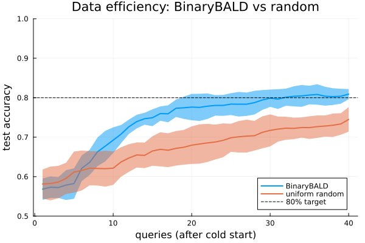
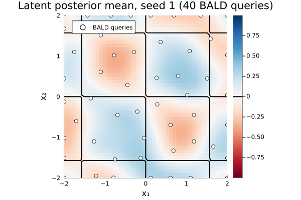

Data efficiency with BinaryBALD: learning curves on a checkerboard
Active learning earns its keep only when each observation is expensive. A drug-discovery ADMET panel runs roughly $3k–$8k per compound; when labels are cheap and abundant, a larger passively-collected dataset simply wins. But when each query has a real cost, the question is no longer how accurate can we get? but how many queries does it take to reach a target accuracy?
This vignette makes that question concrete. We compare two arms on a checkerboard classification task:
- BinaryBALD — selects each query to maximally reduce uncertainty about the decision boundary (mutual information between label and model parameters; Houlsby et al. 2011).
- Uniform random — draws the next query uniformly at random with no acquisition signal.
The headline is a learning curve — test accuracy vs number of queries, averaged over 10 paired seeds with ±1 SD bands.
Setup
ENV["GKSwstype"] = "100" ## GR headless rendering (no display required)
using Magpie, KernelFunctions, LinearAlgebra, Random
using Statistics: mean, std
using Plots; gr()Plots.GRBackend()The task: a checkerboard decision boundary
We classify points in [−2, 2]² by the sign of sin(2x₁)·sin(2x₂). This produces an interleaved checkerboard pattern with four sign-alternating cells in each quadrant — genuinely harder than a convex boundary because the learner must resolve multiple disconnected regions simultaneously. That multi-region structure is exactly what rewards informative sampling most.
label(x) = sin(2x[1]) * sin(2x[2]) > 0
box = Box([-2.0, -2.0], [2.0, 2.0])Box{Vector{Float64}}([-2.0, -2.0], [2.0, 2.0])Learning curves: methodology
A held-out test set of 400 random points is fixed once (seed 0) and reused across every run. Test accuracy is the idiomatic AL metric: it measures generalisation to unseen points rather than memorisation of training data.
For each of 10 seeds we run both arms from the same cold start (10 random points drawn with that seed), then step each arm one query at a time up to budget 40. Sharing the cold start ensures a fair paired comparison. Averaging over 10 seeds gives stable mean curves and honest ±1 SD bands — the reproducibility literature shows single-run AL claims are often noise.
The classifier's lengthscale is now fitted: every 10 queries we re-optimize the Laplace evidence to adapt the kernel to the accumulated data.
# Fixed held-out test set, seeded once
Random.seed!(0)
Xtest = [4 .* rand(2) .- 2 for _ in 1:400]
ytest = label.(Xtest)
acc(g) = sum((predmean(g, p) > 0) == yt for (p, yt) in zip(Xtest, ytest)) / length(Xtest)
function learning_curve(seed; bald::Bool, B = 40, ℓ = 0.4, refit_every = 10)
Random.seed!(seed)
cold = [4 .* rand(2) .- 2 for _ in 1:10] # paired: same seed ⇒ identical cold start for both arms
al = ActiveLearner(LaplaceGP(with_lengthscale(SqExponentialKernel(), ℓ)), BinaryBALD())
for x in cold
observe!(al, x, label(x))
end
accs = Float64[]
for t in 1:B
x = bald ? acquire(al; over = box) : (4 .* rand(2) .- 2) # BALD-selected vs uniform-random
observe!(al, x, label(x))
refit_every > 0 && t % refit_every == 0 && fit!(al)
push!(accs, acc(posterior_gp(al)))
end
return accs
end
SEEDS = 1:10
bald_curves = [learning_curve(s; bald = true) for s in SEEDS]
rand_curves = [learning_curve(s; bald = false) for s in SEEDS]
mb = [mean(c[k] for c in bald_curves) for k in 1:40] # mean BALD curve
mr = [mean(c[k] for c in rand_curves) for k in 1:40] # mean random curve
sb = [std(c[k] for c in bald_curves) for k in 1:40] # ±1 SD for ribbons
sr = [std(c[k] for c in rand_curves) for k in 1:40]40-element Vector{Float64}:
0.03680277767294805
0.04280852069909032
0.04115097541708796
0.03951177742845234
0.05207099853938745
0.050566924851021836
0.0434485647378343
0.043237875628768914
0.04558950293409411
0.04234776656841934
⋮
0.029213058343449384
0.027321389666950194
0.025679650395681868
0.02869983546216867
0.028505603737588932
0.026849632730780067
0.029637860546567422
0.027264140062238033
0.03106891980384541Figure 1 — the headline learning curve
BinaryBALD reaches 80% test accuracy around query 30 on average; uniform random does not cross that threshold within the 40-query budget. The ±1 SD bands show the variation across seeds: the gap is consistent, not a lucky draw.
Why? Uniform random spreads its budget across the whole domain, wasting queries in regions far from any decision boundary. BinaryBALD's mutual-information criterion spends each query where it most reduces uncertainty about the boundary, compressing the path to the target accuracy.
Caveats (important). AL assumes a reasonably calibrated model. At very low budgets the posterior is noisy and BALD can match or trail random; and if observations are genuinely cheap and plentiful, passive sampling wins. A natural additional baseline — not shown here — is max-entropy / uncertainty sampling (query wherever σ(x) is largest); that is a small acquisition to add and would provide a tighter comparison than uniform random alone.
plt1 = plot(
mb;
ribbon = sb,
label = "BinaryBALD",
xlabel = "queries (after cold start)",
ylabel = "test accuracy",
title = "Data efficiency: BinaryBALD vs random",
legend = :bottomright,
ylims = (0.5, 1.0),
linewidth = 2,
)
plot!(
plt1, mr;
ribbon = sr,
label = "uniform random",
linewidth = 2,
)
hline!(
plt1, [0.8];
ls = :dash,
lc = :black,
lw = 1,
label = "80% target",
)
Figure 2 — snapshot at budget 40 (seed 1)
The latent GP mean predmean(g, p) is the pre-sigmoid score: positive in label = true cells, negative in label = false cells. Blue marks the positive class, red the negative; the true checkerboard boundaries are overlaid in black. White dots are the 40 BALD queries (after the 10-point cold start).
# Reproduce seed-1 BALD run for the snapshot
Random.seed!(1)
cold1 = [4 .* rand(2) .- 2 for _ in 1:10]
al1 = ActiveLearner(LaplaceGP(with_lengthscale(SqExponentialKernel(), 0.4)), BinaryBALD())
for x in cold1
observe!(al1, x, label(x))
end
run!(al1, label; budget = 40, refit_every = 10, over = box)
g1 = posterior_gp(al1)
@info "fitted lengthscale" ℓ = round(Magpie._lengthscale(g1.prior.kernel); digits = 3)
xs = range(-2, 2; length = 50)
ys = range(-2, 2; length = 50)
Z_mean = [predmean(g1, [xi, yj]) for yj in ys, xi in xs]
# True checkerboard boundaries: contour of sin(2x₁)·sin(2x₂) at level 0
Z_check = [sin(2xi) * sin(2yj) for yj in ys, xi in xs]
pts1 = queried_points(al1)
px1 = [p[1] for p in pts1]
py1 = [p[2] for p in pts1]
plt2 = heatmap(
xs, ys, Z_mean;
title = "Latent posterior mean, seed 1 (40 BALD queries)",
xlabel = "x₁", ylabel = "x₂",
c = :RdBu,
aspect_ratio = :equal, xlims = (-2, 2), ylims = (-2, 2),
)
contour!(plt2, xs, ys, Z_check; levels = [0.0], lw = 2, lc = :black, label = "true boundary")
scatter!(
plt2, px1, py1;
ms = 4,
mc = :white,
msw = 1,
label = "BALD queries",
)
The example's correctness checks run when this file is executed directly (e.g. in CI); they are stripped from this rendered page.
This page was generated using Literate.jl.